07 / 23 · 中文翻译
第 7 章 视觉、行动与世界模型
本章目录
7.1 多模态视觉—语言模型
许多决策涉及视觉。本节将看到，Transformer 架构也能够学习词元化的视觉模式。在语言和视觉数据上共同预训练的模型称为视觉—语言模型（VLM）。VLM 通常包括（1）语言部分、（2）视觉部分及（3）结合两类嵌入的部分。
我们将讨论这些视觉—语言模型的不同架构，对每类模型介绍任务、架构和训练算法，并看到令人印象深刻的结果。
计算机视觉在人工智能中有悠久而成功的历史。早在自然语言处理取得突破之前，深度学习就已在图像识别任务上成功 [Krizhevsky et al., 2012]。这两个成功领域能否结合？这并非简单问题，因为它们依赖非常不同的深度学习架构：图像处理依赖擅长处理二维矩形像素网格的卷积神经网络，语言处理依赖擅长处理一维词元序列的 Transformer。
我们将看到，结合两者的架构确实已经开发出来，如今大多数前沿模型都是 VLM。
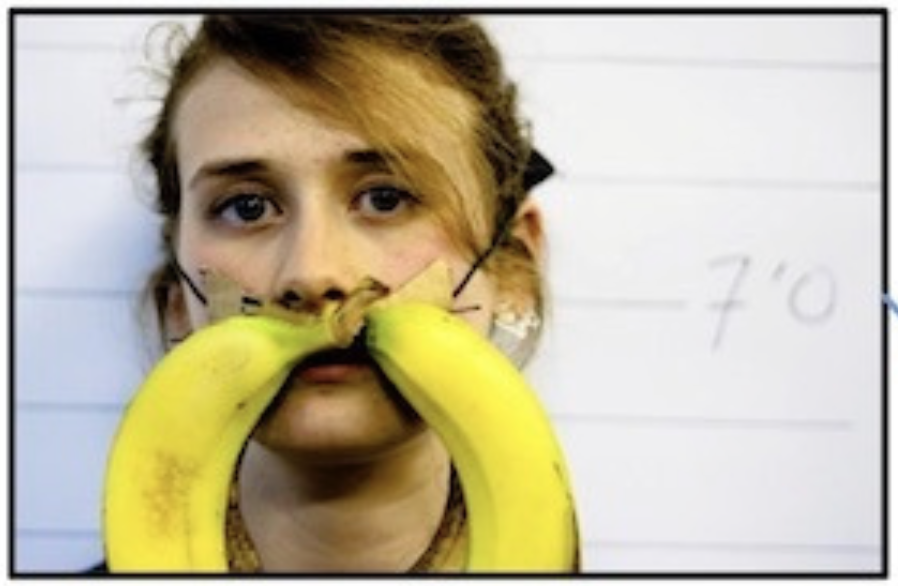
7.1.1 任务
先讨论视觉—语言模型须解决的任务类型，并列举流行基准套件。理解能力可通过视觉问答（VQA）测试，考察模型是否获得对图像的某种文本层面的理解。相关的生成任务是图像描述，即根据图像生成文字描述。此外，模型也可能承担图像生成任务。
来看一些任务示例。对于图 7.1，VQA 问题可以是“这副胡须是用什么做的？”，系统应回答“香蕉”。其他典型问题包括统计图像特定区域中某种颜色、某种形状的数量（例如回答“这个场景中，桌子上角是否有红色方块？”）。任务类型十分多样，流行基准包括 MOSAIC [Burda-Lassen et al., 2025]、GLOBAL-RG [Bhatia et al., 2024]、CultureVQA [Nayak et al., 2024]、FoodieQA [Li et al., 2024] 和 MaRVL [Liu et al., 2021]。
在图像描述任务中，可提示模型描述图 7.2 的场景，其中是一只快乐的狗站在海水里。请注意，不同描述也可能同样有效，例如湿漉漉的狗、感到寒冷的狗，或戴着红项圈、站在海水里的狗。流行基准包括 MS-COCO [Lin et al., 2014]、nocaps，11 1 https://nocaps.org，以及视频的 MSR-VTT [Xu et al., 2016] 和用于传统简短描述评估的 VATEX [Wang et al., 2019]。较新的基准侧重详细、多方面的描述，包括 DetailCaps [Dong et al., 2024]、VDC [Chai et al., 2024] 和 CapArena [Cheng et al., 2025]。
VLM 的典型应用包括摘要、图像生成、搜索检索、图像分割和目标检测。面向专家级 AGI 的大规模多学科多模态理解与推理基准（MMMU），是视觉—语言模型的综合基准 [Yue et al., 2024]。
7.1.2 架构
了解 VLM 的测试任务类型之后，如何设计模型完成这些任务？
语言被建模为词元序列时，是序列性（一维）问题领域；视觉被建模为像素网格时，是矩形（二维）问题领域。相应地，两类应用采用不同深度学习架构：语言用 Transformer 寻找序列模式，图像用卷积神经网络寻找二维模式。因此，多模态视觉—语言模型应采用何种架构并不明显；事实上，一度连 VLM 能否运作都不清楚。
研究首先关注：除传统卷积神经网络（CNN）之外，Transformer 是否也能进行图像处理。人们开发出专门的视觉 Transformer 和词元化方案，在图像处理中表现良好 [Dosovitskiy et al., 2020]。
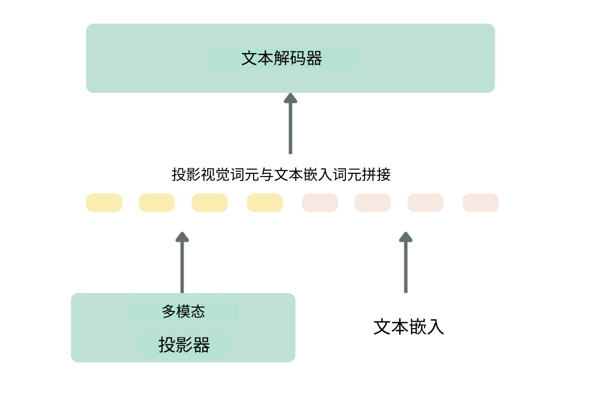
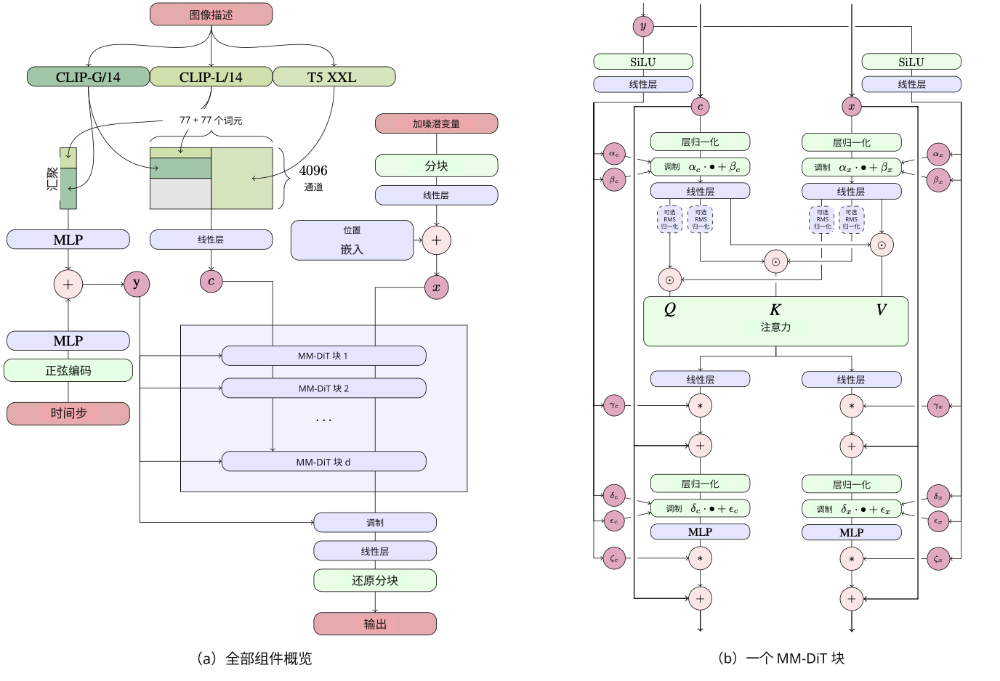
随后，需要一种结合语言和图像嵌入、并生成语言的架构。一般而言，VLM 包含图像编码器（CNN 或采用特殊词元化的视觉 Transformer）和文本编码器，两者连接到嵌入投影器（常为稠密神经网络），以对齐图像与文本表示，最后再连接文本解码器（Transformer）。图 7.3 以 LLaVa 为例展示这一架构 [Liu et al., 2023]。视觉嵌入与文本嵌入通过一个将视觉嵌入投影为另一嵌入的网络连接，使模型能够统一推理。投影网络通常是稠密神经网络（多层感知机，MLP）。
人们还开发了更精细的架构，最先进 VLM 可以十分复杂，包含多个 Transformer 模块。例如图 7.4 展示生成式 Stable Diffusion 架构 [Esser et al., 2024, Weng, 2021, Yang et al., 2023]。
7.1.3 学习算法
介绍任务和架构之后，接下来考察 VLM 使用的学习算法。不同编码器和投影器使 VLM 可以接受训练。训练算法应对齐、融合视觉与语言编码器的知识，使模型能够关联图像和文本信息，根据两种模态分析查询并回答。文献报道了多种训练 VLM 的方法。
OpenAI 的 CLIP [Radford et al., 2021]，即对比语言—图像预训练，使用对比学习。这是一种自监督学习，在数据集没有标签时创建监督信号。其思想是在嵌入空间中将不同数据点推远、相似数据点拉近。对比学习最大化正样本对（例如同一图像的相似形式）的表示相似性，最小化负样本对（不同物体的图像）的相似性。
另一种方法是掩码：类似语言模型训练，VLM 学习预测输入文本或图像中随机遮蔽的部分。例如，给定未遮蔽的描述，模型学习重建图像的隐藏像素。FLAVA（foundational language and vision alignment，基础语言与视觉对齐）就是一个例子，使用视觉 Transformer 作为图像编码器，并以 Transformer 作为语言编码器及多模态投影器 [Singh et al., 2022]。
VLM 也用于生成式任务，根据文本提示生成图像。流行的文生图模型通常采用扩散模型 [Ho et al., 2022, Yang et al., 2023]。著名例子包括 Google 的 Imagen [Baldridge et al., 2024]、Midjourney、OpenAI 的 DALL-E [Betker et al., 2023] 和 Stability AI 的 Stable Diffusion [Esser et al., 2024]。DALL-E 2 使用以 CLIP 图像嵌入为条件的扩散模型。图 7.5 展示 DALL-E 著名的超现实牛油果扶手椅。
从零预训练视觉—语言模型成本高昂，而 VLM 由语言模型和视觉模型构成，因此可以尝试使用一两个已经预训练的现有模型来构建。可同时使用预训练 LLM 和预训练视觉编码器，添加映射网络，将视觉嵌入投影到语言模型的文本输入空间。LLaVA（large language and vision assistant，大型语言与视觉助手）就是一例。它采用 Vicuna 语言解码器和 CLIP ViT 视觉编码器，通过线性投影器将其输出合并到共享维度空间 [Liu et al., 2023]。
许多视觉—语言模型已被开发，通常在基准任务上表现良好，常用于智能体决策。VLM 如此流行，以至于当前许多开放及商业 LLM 都是 VLM：DeepSeek-VL2、Gemini 2.0 Flash、GPT-4o、Llama 3.2、NVLM、Qwen 2.5-VL。
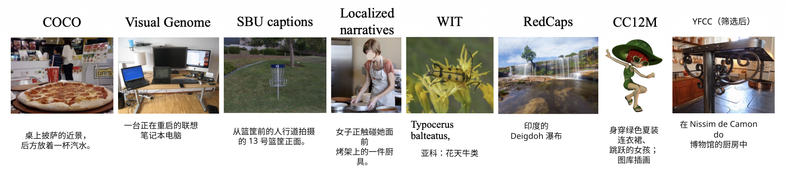
7.1.4 结果
通过文献中报道的一些例子，看看 VLM 在图像描述和图像生成方面表现如何。
从视觉问答、目标检测、图像描述到文生图，视觉—语言模型产生了富有想象力且启发人心的结果。图 7.6 展示 Flava 使用的测试数据集示例。DALL-E 2 的后继 DALL-E 3 侧重于使用生成的、描述十分详尽的图像说明训练，取得更出色结果 [Betker et al., 2023]。图 7.7 展示 DALL-E 3 一些遵循提示的图像生成能力。图 7.8 展示 Stable Diffusion 的例子（基于修正流扩散模型）。
7.2 决策与视觉—语言—动作模型
智能体要行动就必须决策，要决策就必须权衡不同选择。本节将看到，可以在状态、动作和奖励的回合序列上训练 Transformer （另见第 20.1.2 节）。这些模型在语言、视觉及机器人动作序列上训练。视觉—语言—动作模型（VLA，图 7.9）被训练为输出机器人 API 命令，这是一种特殊语言：引导机器人运动的命令语言。
VLA 的任务是理解视觉场景，在收到文本命令后，根据摄像头所见，指示机械臂执行适当动作。这些模型显示了令人印象深刻的结果：机器人泛化到未见情境并成功完成任务。
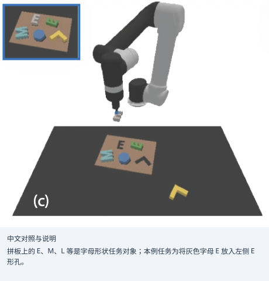
7.2.1 任务
VLA 的主要任务是在现实世界中执行指令，并在变化环境中以通用方式完成。如果机器人操作模型已学会捡起一组红铅笔，任务变为捡蓝铅笔时，我们希望模型能够泛化，无须重新收集蓝铅笔训练集、从零训练。我们也希望模型识别物体，辨认物体朝向改变、位置移动或光照变化。模型应知道如何用机械臂操作物体、执行不同动作。图 7.10 展示取自 CLIPort 论文的例子 [Shridhar et al., 2022]。
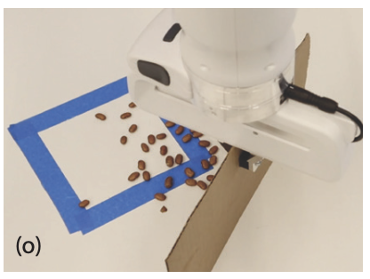
VLA 最困难的任务，是将场景、物体和动作组合为复杂操作，并泛化到训练中未见过的组合。尤其是在复杂、不断变化、甚至可能是户外的环境中进行长时域导航，是复杂挑战 [Shridhar et al., 2022]。
在真实人机交互场景中，收集额外示范往往不可行。为执行图 7.11 这样的高层任务，VLA 必须识别物体、位姿及实例分割。模型还须理解语言，将语言含义与视觉物体和机器人动作的含义联系起来。
我们将看到，语言为指定目标和跨任务迁移语义概念提供直观接口。此外，VLM 研究已展示如何在语义层面连接不同类型的嵌入。
7.2.2 架构
了解任务和挑战之后，来看看可能的模型架构。它们同样可能相当复杂。自然语言的结果表明，Transformer 非常适合学习序列数据模式。直觉上，这意味着它也可能擅长建模序贯决策问题，即强化学习中常用于机器人行动的问题，见第 2.2.3 节（更深入讨论见第 20.2.1 节）。这些问题由状态开始，动作使系统进入新状态，新状态又有动作，依此类推。Transformer 架构非常适合建模这类问题。
决策 Transformer（DT）的早期工作 [Chen et al., 2021, Janner et al., 2021] 表明，在离线（静态）强化学习问题上，GPT 架构确实能够学得最优策略。决策预训练 Transformer（DPT）Lee et al. [2023], Wang et al. [2024a] 表明，基本 Transformer 架构可在决策轨迹上预训练、微调。第 20.1.2 节将进一步讨论决策轨迹。
在 CLIPort 的开创性工作之后 [Shridhar et al., 2022, Shridhar et al., 2020]，VLA 往往建立在 VLM 上，将机器人命令作为普通语言词元。下面详细考察一些代表模型。
Mobility VLA [Chiang et al., 2024] 的目标是导航，由长上下文 VLM 与拓扑地图结合而成，如图 7.12 所示。
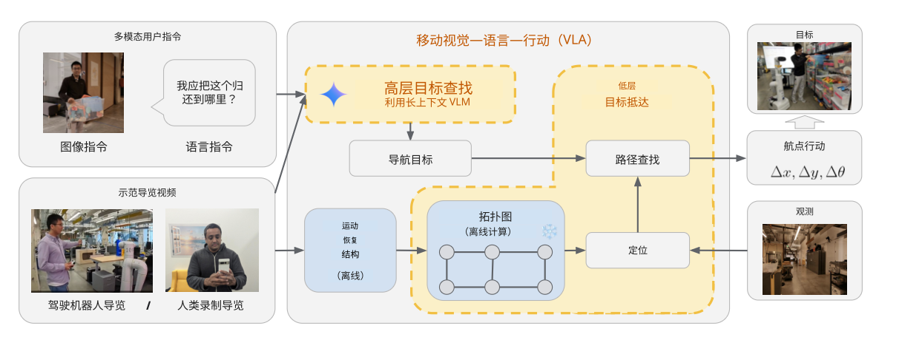
Mobility VLA 用于一类称为“带示范游览的多模态指令导航”（MINT）的导航任务。该数据集通过事先录制的示范视频提供环境先验。模型采用两级 VLA，将长上下文 VLM 的环境理解与常识推理，同基于拓扑图的低层导航策略结合。高层策略借助长上下文 VLM 结合用户指令，在示范视频中寻找目标帧。随后，低层策略从目标帧出发遍历拓扑图，在每个时间步生成机器人动作指令。
LM-Nav [Shah et al., 2023] 采用基于现有模型的不同架构。输入是一组来自目标环境的原始观测，以及自由形式文本指令。它用三个预训练模型推导行动计划：提取地标的语言模型（LLM）、进行落地关联的视觉—语言模型（VLM），以及负责执行的视觉导航模型（VNM，与前述拓扑地图类似）。这些模型共同使 LM-Nav 无须任何微调，就能根据视觉观测遵循文本指令。图 7.13 展示这一方法。
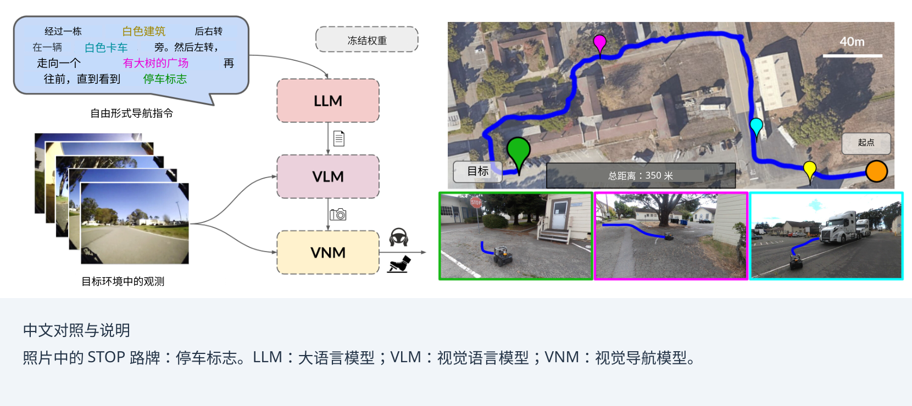
Google 的 RT-2 [Brohan et al., 2023] 采用另一方法，利用网络知识指导机器人控制：机器人应通过看视频学习行动。标准视觉—语言模型同时在文本形式的机器人轨迹数据，以及互联网规模的视觉—语言任务（如视觉问答）上微调。机器人动作表示为普通文本词元，与自然语言词元一样直接加入训练集，见图 7.14。
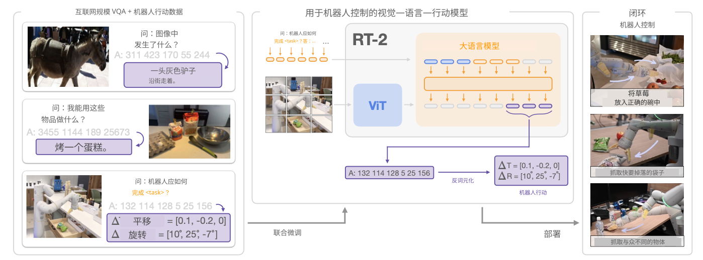
Magma [Yang et al., 2025] 采用类似方法，在从图像、视频到机器人数据的异质数据集上预训练。不过，它用特殊词元 Set-of-Mark 标注图像中可操作的视觉物体，实现动作落地关联；类似地，用 Trace-of-Mark 标注物体运动（如人手或机械臂轨迹），方便动作规划。图 7.15 展示示意。
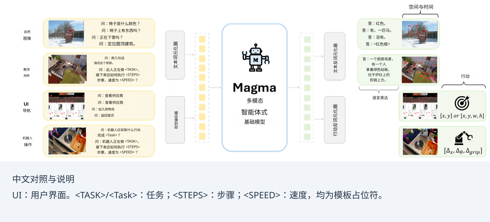
最后，名为 的 VLA [Black et al., 2024] 强调强化学习方法，使用预训练的后期融合视觉—语言模型，以及涵盖各种操作任务的多样化跨形态数据集。模型受到 Transfusion 方法启发 [Zhou et al., 2024]。通过添加独立动作专家，经流匹配产生动作，实现流畅操作技能，从而使模型适用于机器人控制。得到的模型可直接根据提示执行任务，也可在更高质量数据上进一步微调，实现复杂多阶段任务，例如折叠多件衣物或组装盒子（见图 7.16）。
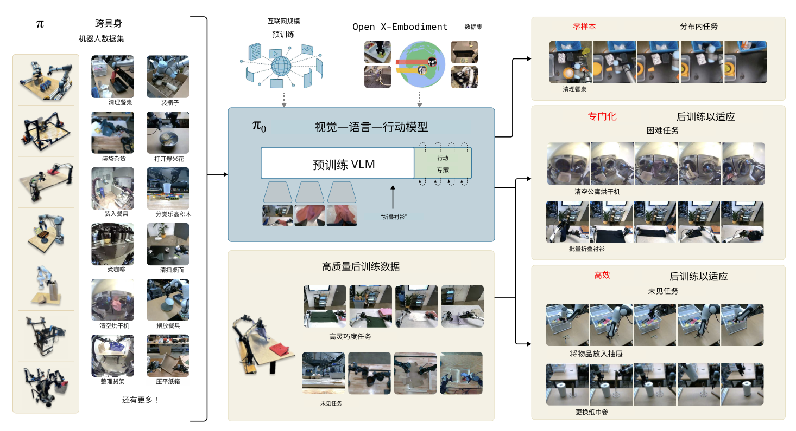
7.2.3 学习算法
多数 VLA 架构基于 VLM，有时补充导航地图数据。机器人动作命令通常编码为普通文本命令。同样，预训练和微调采用典型 LLM 自监督学习算法，类似 VLM 和决策 Transformer。有时使用已有预训练模型，以降低训练成本。
7.2.4 结果
多种 VLA 模型取得了出色的零样本结果，将行为泛化到未见情境。Chiang et al. [2024], Brohan et al. [2023], Yang et al. [2025] 是机器人行动 VLA 的例子，能够完成导航、桌面操作甚至叠衣服等复杂任务 [Black et al., 2024]。
VLA 展示了出色且富有想象力的结果，机器人能够在推断时泛化，无须重新训练。VLA 综述可见 [Ma et al., 2024]。
观看视频最能体会这些成果。 有视频可看。22 2 https://www.physicalintelligence.company/blog/pi0 RT-2 也提供视频。33 3 https://robotics-transformer2.github.io
7.3 世界模型、物理与规划
对 VLM 而言，图像由像素构成，没有更深的内在意义。但与世界交互的智能体，需要了解世界的物理方面。模型必须理解物理上什么可行，才不会像电子游戏中有时发生的那样穿墙而行。
世界模型帮助智能体理解世界，使其能够在物理世界有效行动，采取合理动作。大语言模型最初是语言模型。我们能用自然语言与它对话，它必然包含某些世界知识，却并未专门训练为广泛、深入地理解世间事务。一些研究者认为，要使智能体式大语言模型真正成功，让大语言模型达到较高通用智能水平，必须加强世界模型研究 [Sutton et al., 2022, Matsuo et al., 2022, LeCun and others, 2022, Klindt et al., 2026]。
在世界中行动的智能体和机器人，需要对物理规律有基本理解。训练大语言模型的挑战之一，是将其对物理世界及可能机器人动作的理解落实到现实。一种方法是根据动作反馈学习关于世界（环境）的智能体模型。
“世界模型”在人工智能的其他语境也被使用，最典型的是基于模型的强化学习中的模型 [Ha and Schmidhuber, 2018, Moerland et al., 2023, Sutton, 1991]（见下一节）。它根据与环境的交互，在本地保留部分环境知识，用于改善行动策略。世界模型包含高效、压缩、通过学习获得的世界表示 [Hafner et al., 2019, Plaat et al., 2020]。这种表示常称为抽象或潜在表示，以区别于环境中现实世界的常规表示。世界模型常被训练为包含物理及特定空间属性的知识，对智能体动作形成约束。其具体内容取决于智能体运行的领域。
注意，短短几章，我们已从理解语言推进到理解世界。大语言模型旨在从文本统计模式中理解自然语言的部分语义，用于问答和翻译；世界模型旨在理解物理规律中的因果关系，为智能体模拟未来世界状态。从大语言模型走向智能体式大语言模型，需要相当多的新技术。
首先考察世界模型目前如何用于智能体式大语言模型。
7.3.1 任务
世界模型应封装世界知识，使智能体能够执行有意义的动作，动作须扎根于物理世界。例如，模型应理解它所控制机械臂的关节限制；导航智能体应理解重力、距离和墙壁是实体等物理概念；金融智能体应理解银行余额为负的后果。人类往往将这些信息视为理所当然，当智能体不理解其运行世界中的基本事物时，我们会惊讶。只在像素上训练的 VLM 可能忽视某种纹理的语义，不知道它是衣物、烟雾还是墙。
标准预训练大语言模型已包含一些有用世界知识。它们利用人类反馈强化学习（RLHF）学习可接受的文本行为，利用可验证奖励强化学习（RLVR）学习可接受的数学和编程行为。一些早期方法直接将大语言模型当作预训练世界模型，不进行微调。通过交互理解世界物理规律是一种自然方式：智能体可以通过强化学习式奖励函数学习可接受的物理行为。
基于模型的强化学习中，世界模型旨在以模型规划代替现实采样，提高从交互中学习的样本效率。当与现实交互比模拟昂贵时，这尤其有用，而智能体式大语言模型中常是如此。下面的方法中，大语言模型世界模型采用基于模型的强化学习方法（见第 7.3.5 节）。目前这些方法十分多样。为展示大语言模型中的世界模型承担什么任务，我们讨论三个例子：WorldGPT、WebDreamer 和 WorldCoder。
WorldGPT
WorldGPT [Ge et al., 2024] 旨在解决视觉问答及具身规划任务，包括音视频问答。它从视频学习世界 VLM，使用带外部知识库和长期记忆的潜在空间 VLM。
WebDreamer
WebDreamer [Gu et al., 2024] 旨在提高电子商务等网页交互任务的学习效率。它让网页智能体在执行前模拟动作，从而更快、样本效率更高（无须在真实网页中行动来获取经验）。这是网页世界中的基于模型的强化学习方法。（名称来自 Dreamer，一系列有影响力的基于模型的强化学习潜在动力学模型 [Hafner et al., 2019, Hafner et al., 2020a, Hafner et al., 2023]。）典型任务是在电商网站寻找产品。它从大模型训练小模型，以实现高效模拟。
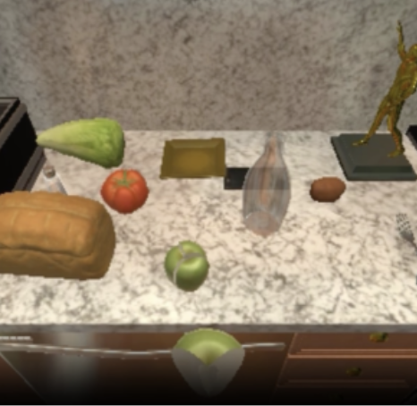
WorldCoder
WorldCoder [Tang et al., 2024] 同样旨在改善样本效率，但采用不同方法：以可解释 Python 代码生成动力学模型（转移函数和奖励函数），用于标准的基于模型的强化学习设计。生成的 Python 代码执行效率比大语言模型推断高。WorldCoder 用于网格任务（Sokoban，见图 7.17）及家务任务规划（AlfWorld，见图 7.18）。
7.3.2 架构
世界模型的目的是为观测增加语义——动作具有后果——这可能是 LLM 和 VLM 的薄弱之处。某个像素何时属于可行走地面（限制 运动），何时属于阻挡前进的墙（限制 运动）？奖励函数反馈哪些动作好、哪些不好。因此，世界模型架构常采用强化学习设置，根据反馈奖励训练行动策略。可以将世界模型看作内部带有策略学习器的 VLM。
WorldGPT、WebDreamer 和 WorldCoder 采用不同世界模型架构，下面详细讨论。
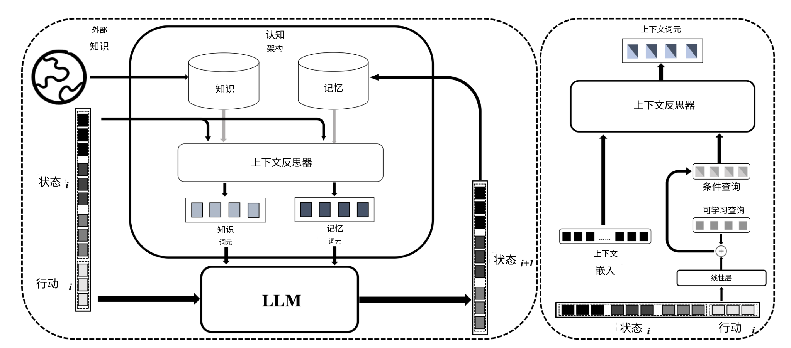
WorldGPT
WorldGPT 基于标准大语言模型 Vicuna-7B-v0。44 4 https://huggingface.co/lmsys/vicuna-7b-v1.3、https://lmsys.org 它遵循基于模型的强化学习，在潜在空间推理，目标是模拟真实世界动力学，即强化学习的转移和奖励函数。为此，特殊架构帮助合成多模态指令实例。核心采用常见 VLM 架构，含中央 LLM、多模态编码器和解码器。为帮助模型合成多模态指令，添加认知架构来处理专门或长期任务，包括记忆、知识检索和上下文反思。上下文反思基于 Q-former [Li et al., 2023]。架构图见图 7.19。
WebDreamer
WebDreamer 面向网页交互，将 Qwen-70B 大模型 [Bai et al., 2025] 蒸馏为 7B 小模型，然后在“真实”网页世界行动之前，用小模型结合世界模型模拟动作。它使用模型预测控制（MPC）作为规划方法 [Garcia et al., 1989, Schwenzer et al., 2021]，决定网页动作，并在每个交互步骤重新规划。WebDreamer 将大语言模型既作世界模型，也作价值函数。LLM 实现模拟函数（sim）及评分函数（score），见图 7.20。此外，沿用 [Koh et al., 2024]，还用 LLM 生成候选动作。作者采用两阶段方法：先采样 top- 动作，再用 LLM 自我优化，剔除模拟中不必要的动作。
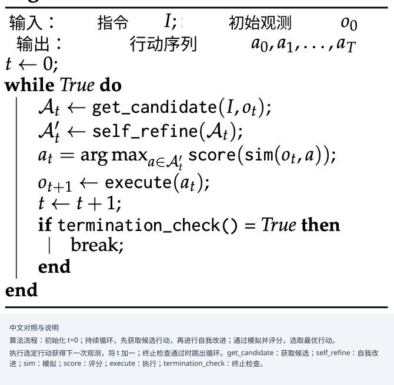
WorldCoder
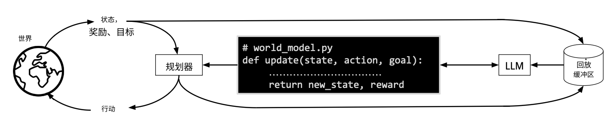
WorldCoder 是基于模型的智能体，构建 Python 程序表示世界知识。它以可执行 Python 代码创建世界转移函数，见图 7.21，采用程序综合。强化学习将问题形式化为 MDP，包括状态表示 、动作函数 、转移函数 和奖励函数 （见第 7.3.5 节）。WorldCoder 使用 LLM 为任务的动作、转移、奖励函数和状态表示生成 Python 代码，随后用于基于模型的强化学习。通过迭代自调试优化过程检查、改进代码 [Chen et al., 2023]，见第 6.1.3.2 节，重复直到程序产生正确输出。
注意，WorldCoder 学得的模型是符号式的（转移函数表示为计算机代码），而常规深度强化学习使用神经网络。推断时，WorldCoder 高效，因为不调用需要通过大网络前向传播的 LLM，只解释转移和奖励函数的 Python 代码。
常规基于模型的 LLM 方法中，LLM 模拟世界；WorldCoder 则由 LLM 构建世界模拟，供之后执行。推断时，Python 解释器执行转移函数，而 ReAct 由 LLM 对世界状态推理。对于规划问题，符号方法更适合，因为 LLM 在推断期间进行规划较困难（见第 6.2.3 节）。
7.3.3 学习算法
下面讨论不同方法采用的预训练与微调算法。
WorldGPT
WorldGPT 在各领域数百万视频上预训练和微调，获得对世界动力学的理解，采用 Vicuna-7B-v0 作为基础 LLM。预训练随后用以语言为中心的编码器获得多模态状态的统一表示。多模态解码时，在 LLM 词表插入特殊词元。训练从单模态开始，逐步转为跨模态。微调使用特殊认知强化架构，以及来自一千多万视频、带细粒度序贯状态转移样本标注的数据集。如前所述，认知架构包括记忆、知识检索和上下文反思。智能体在合成多模态指令数据上微调，从而获得专门知识。
WebDreamer
WebDreamer 旨在学习适合基于模型的强化学习的动力学。先用预训练 Qwen-2-VL 视觉—语言模型 [Wang et al., 2024b] 初始化 Dreamer-7B，再在 310 万交互样例上微调。数据合成流水线包括：（1）网页随机游走，模型通过输入搜索词、点击等动作自主与网页互动；（2）合成，Qwen2-VL-72B 根据动作前后的视觉快照，生成状态变化的文本描述。WebDreamer 为每个动作在有限时域内模拟可能未来状态（遵循模型预测控制 MPC 进行重新规划和训练，这是一种工程及控制问题中用于自适应重训练的强化学习方法）。
WorldCoder
WorldCoder 通过程序综合学习构建转移函数，即计算世界下一状态的函数，再利用该编码的世界模型执行规划动作。它先随机探索，初始化环境交互数据集；通过程序综合算法更新世界模型、生成代码，再进行规划。可以使用不同规划器，从简单领域的深度受限价值迭代，到复杂领域的 MCTS [Browne et al., 2012]。
7.3.4 结果
下面考察三种方法的结果。
WorldGPT
WorldGPT 使用多模态状态转移预测基准评估。模型有效，能够准确理解和预测复杂现实厨房及烹饪场景的动态。
系统也作为世界模拟器接受评估，显示其能泛化到不熟悉领域。在一个实验中，WorldGPT 在音视频问答任务上比传统基于扩散的方法快 30 倍 [Ge et al., 2024]。
WebDreamer
WebDreamer 同样表现良好。据报道，它在网页交互任务上超过 GPT-4o，相比反应式基线显著改善性能，效率比树搜索高 4–5 倍。它在沙箱 VisualWebArena 以及真实网站（Online-Mind2Web、Mind2Web-Live）上均表现良好，而真实网站难以实现、部署树搜索。此外，在线基准上采用 Dreamer-7B 时，性能可与 GPT-4o 相当。在真实网站上，相较反应式基线分别取得 42% 和 24% 的相对提升。
WorldCoder
WorldCoder 的结果来自网格世界和任务规划（AlfWorld）。相比无模型强化学习，它样本效率更高；相比尝试用 LLM 进行上下文规划的 ReAct 式智能体，它计算效率更高。
用 LLM 将世界知识生成计算机代码有多项优势。LLM 内含的先验世界知识可以改善代码生成，因为预训练很可能见过已发布问题的现成解法。代码还可通过复用旧程序片段跨任务迁移。此外，结果人类可读，能够通过阅读生成代码检查世界知识。
虽然 WorldCoder 对规划问题很有前景，但其局限来自规划问题固有的计算困难。专用求解器难以解决的问题实例，WorldCoder 求解器也难解决。LLM 生成的转移函数不太可能优于人类专家研究者设计的函数。
目前，合成代码旨在复现转移和奖励函数。未来，自我反思和元学习方法可能进一步提高性能。
7.3.5 *基于模型的强化学习
世界模型已成功用于智能体式大语言模型。基于模型的强化学习中已有大量世界模型文献。本章末尾将简要概述这一领域的世界模型，为理解它们在大语言模型中的应用提供更多背景。
有影响力的早期基于模型方法是 Dyna [Sutton, 1991]。有影响的近期工作有 [Ha and Schmidhuber, 2018, Hafner et al., 2020b]。两篇现代综述是 Moerland et al. [2023], Plaat et al. [2023]。
强化学习中，智能体通过采样在环境中执行动作所得到的奖励，学习如何行动。
7.3.5.1 无模型强化学习
常规强化学习以无模型方式学习最优智能体策略：直接通过环境交互学得所有状态的最佳动作（见图 7.22），无须额外环境模型帮助。它形式化为包含四个函数 的马尔可夫决策过程：表示观测 对应系统状态的函数 ；利用动作从一个状态转移到下一状态的函数 ；为状态返回动作的函数 ；以及为状态赋予正或负奖励值的函数 。强化学习旨在利用 MDP 学习最优策略 ，为 MDP 可能处于的每个状态返回最佳动作。因此，问题包含四个函数 、、 和 ，智能体目标是找到期望累计奖励最高的最优策略 。智能体无法访问环境中的函数 和 。常规无模型强化学习也称直接强化学习。这种直接方法天然样本复杂性高：策略改进需要采样，大型 MDP 需要大量样本才能使改进过程收敛（图 7.22）。
7.3.5.2 基于模型的强化学习
直接强化学习中，智能体不保留采样信息，而是遗忘，每次策略改进都需要新样本。与外部环境交互往往昂贵，例如现实机器人行动会磨损关节。这时，寻找降低样本复杂性的方法很有益，应尝试在减少环境采样的同时改进策略。
直接的想法是不丢弃样本，而存入缓冲区，同时从旧交互结果缓冲区采样；稍先进一些，则训练环境动力学的局部替代模型 。训练好局部动力学模型后，除了昂贵的环境采样，还可廉价地从模型采样（见图 7.23）。
这些属于间接方法，因为在后一种由智能体建立局部动力学模型的方法中，策略通过局部模型间接地从环境学习。
使用局部动力学模型称为基于模型的强化学习。动力学模型包含智能体的局部估计 和 ，估计只有环境知道的真实 与 。它已在围棋 [Silver et al., 2016]、Diplomacy [Bakhtin et al., 2022]、StarCraft [Vinyals et al., 2019] 及跨领域学习展示 [Hafner et al., 2020b] 等应用中成功。
基于模型的强化学习也与符号人工智能经典领域“规划”相连：借助高效潜在表示模拟不同可能世界、向前展望未来，无须在现实世界行动。
7.3.5.3 降维
深度的基于模型强化学习中，局部动力学模型也称世界模型 [Ha and Schmidhuber, 2018]。它将高维观测空间降为低维状态和奖励空间，随后用于基于模型的强化学习，高效改善策略函数。思想是：多数高维环境中存在较不重要的元素，例如电子游戏背景中从不移动的树，与智能体动作价值关系很小或毫无关系。目标是抽象掉输入空间的不重要元素，减少状态空间的有效维度。
7.3.5.4 联合嵌入预测架构
联合嵌入预测架构（JEPA）由 LeCun and others [2022] 提出，并在 Assran et al. [2023] 中进一步完善。它旨在抽象、压缩表示（潜在空间）中预测未来状态，而非重建原始感官细节或像素。这类似基于模型强化学习中世界模型的降维目标。不过，后者在奖励监督下学习局部转移模型，而 JEPA 是自监督表示学习框架：通过观察视频或图像，将上下文嵌入映射至目标嵌入，不使用奖励或显式动作。基于模型的强化学习则明确纳入动作、奖励和控制优化，以最大化回报 [Lim et al., 2026]。JEPA 与强化学习联系紧密，可作为强化学习或规划算法的感知引擎（世界模型），例如指导机器人控制 [Destrade et al., 2025]。
7.3.5.5 智能体世界模型
在基于模型的强化学习背景下，大语言模型有两种用法。可以将预训练（静态）LLM 作为世界模型 ，用于基于模型的强化学习（LLM4MBRL），通常采用树搜索或 MCTS 规划。这种方法以 LLM 帮助强化学习。
另一种是利用（基于模型的）强化学习设置，以世界交互反馈训练 LLM 世界模型（MBRL4LLM）。这时，LLM 通过自适应 Harness，或像 VLA 那样对模型本身后训练，变得可适应。这也称智能体世界模型，有望让智能体更好理解环境，以更符合现实的方式行动。此方法用强化学习帮助智能体语言建模，是活跃研究领域，例如见 Zuo et al. [2026] 及其参考文献。55 5 强化学习与语言建模还有第三种联系：在 LLM 训练流水线内，也用无模型强化学习进行微调，例如 RLHF 和 RLVR。
7.4 结语
Transformer 可在词元化语言数据上训练，也可在其他词元化数据上训练。本章介绍不同模态的不同模型架构。架构上差异很大，但多数基于 Transformer，并为差异惊人的各种模态设计了词元化方法。回顾不同类型模型，看看其共同点：
- •
大语言模型（LLM）是在词元化自然语言上预训练的 Transformer。
- •
视觉—语言模型（VLM）由在词元化视觉数据上训练的 Transformer（或扩散模型、卷积网络）与在词元化自然语言上训练的 Transformer 组成，两者嵌入汇合于联合解码器。
- •
决策 Transformer（DT）是在词元化的决策路径 回合序列上训练的 Transformer（见第 20.1.2 节）。
- •
视觉—语言—动作模型（VLA）具有视觉—语言架构，还在词元化的机器人动作 回合序列上训练。
- •
世界模型具有视觉—语言架构，还在词元化的真实世界动作或决策 回合序列上训练。
本章未讨论的其他模型也存在。例如，大型音乐模型（LMM）是在词元化音乐序列上预训练的 Transformer，序列可以是符号音乐（乐谱）或音轨 [Yuan et al., 2025]。
本章聚焦用于智能体的进阶模型，讨论在视觉和动作上预训练、微调的语言模型。它们理解更多世界知识，使智能体取得出色的泛化结果。我们看到，LLM 最初是语言模型，正逐渐成为世界模型，这个术语借自基于模型的强化学习。
现在适合回顾已学内容。第一部分解释如何以自指方式对语言预训练模型。随后，第 6 章解释上下文学习如何涌现，以及如何用于推断时多步推理与自我反思。本章讨论产生环境多模态世界模型的预训练和微调方法。预训练语言、推断时推理与微调世界模型共同使智能体越来越能智能行动，在世界中为用户完成任务。
至此，我们讨论了许多不同模态和训练方法。下一章将退一步，反思智能体如何一边在作为学习来源的世界中行动，一边稳定地学习。
参考文献
- Self-supervised learning from images with a joint-embedding predictive architecture. In 2023 IEEE/CVF Conference on Computer Vision and Pattern Recognition (CVPR), pp. 15619–15629. Cited by: §7.3.5.4.
- Qwen2. 5-vl technical report. arXiv preprint arXiv:2502.13923. Cited by: §7.3.2.
- Human-level play in the game of diplomacy by combining language models with strategic reasoning. Science 378 (6624), pp. 1067–1074. Cited by: §7.3.5.2.
- Imagen 3. arXiv preprint arXiv:2408.07009. Cited by: §7.1.3.
- Improving image generation with better captions. Computer Science. https://cdn. openai. com/papers/dall-e-3. pdf 2 (3), pp. 8. Cited by: 图 7.7, 图 7.7, §7.1.3, §7.1.4.
- From local concepts to universals: evaluating the multicultural understanding of vision-language models. arXiv preprint arXiv:2407.00263. Cited by: §7.1.1.
- : A vision-language-action flow model for general robot control. arXiv preprint arXiv:2410.24164. Cited by: 图 7.16, 图 7.16, §7.2.2, §7.2.4.
- Rt-2: vision-language-action models transfer web knowledge to robotic control. arXiv preprint arXiv:2307.15818. Cited by: 图 7.14, 图 7.14, §7.2.2, §7.2.4.
- A survey of monte carlo tree search methods. IEEE Transactions on Computational Intelligence and AI in games 4 (1), pp. 1–43. Cited by: §7.3.3.
- How culturally aware are vision-language models?. In 2025 IEEE 6th International Conference on Image Processing, Applications and Systems (IPAS), pp. 1–6. Cited by: §7.1.1.
- Auroracap: efficient, performant video detailed captioning and a new benchmark. arXiv preprint arXiv:2410.03051. Cited by: §7.1.1.
- Decision transformer: reinforcement learning via sequence modeling. Advances in neural information processing systems 34, pp. 15084–15097. Cited by: §7.2.2.
- Teaching large language models to self-debug. arXiv preprint arXiv:2304.05128. Cited by: §7.3.2.
- Caparena: benchmarking and analyzing detailed image captioning in the llm era. arXiv preprint arXiv:2503.12329. Cited by: §7.1.1.
- Mobility vla: multimodal instruction navigation with long-context vlms and topological graphs. arXiv preprint arXiv:2407.07775. Cited by: 图 7.12, 图 7.12, §7.2.2, §7.2.4.
- Value-guided action planning with jepa world models. arXiv preprint arXiv:2601.00844. Cited by: §7.3.5.4.
- Benchmarking and improving detail image caption. arXiv preprint arXiv:2405.19092. Cited by: §7.1.1.
- An image is worth 16x16 words: transformers for image recognition at scale. arXiv preprint arXiv:2010.11929. Cited by: §7.1.2.
- Scaling rectified flow transformers for high-resolution image synthesis. In Forty-first international conference on machine learning, Cited by: 图 7.4, 图 7.4, 图 7.8, 图 7.8, §7.1.2, §7.1.3.
- Model predictive control: theory and practice—a survey. Automatica 25 (3), pp. 335–348. Cited by: §7.3.2.
- Worldgpt: empowering llm as multimodal world model. In Proceedings of the 32nd ACM International Conference on Multimedia, pp. 7346–7355. Cited by: 图 7.19, 图 7.19, §7.3.1, §7.3.4.
- Is your llm secretly a world model of the internet? model-based planning for web agents. arXiv preprint arXiv:2411.06559. Cited by: 图 7.20, 图 7.20, §7.3.1.
- World models. arXiv preprint arXiv:1803.10122. Cited by: §7.3.5.3, §7.3.5, §7.3.
- Dream to control: learning behaviors by latent imagination. In International Conference on Learning Representations, Cited by: §7.3.1.
- Learning latent dynamics for planning from pixels. In International Conference on Machine Learning, pp. 2555–2565. Cited by: §7.3.1, §7.3.
- Mastering atari with discrete world models. arXiv preprint arXiv:2010.02193. Cited by: §7.3.5.2, §7.3.5.
- Mastering diverse domains through world models. arXiv preprint arXiv:2301.04104. Cited by: §7.3.1.
- Large language models are reasoning teachers. arXiv preprint arXiv:2212.10071. Cited by: §7.1.3.
- Offline reinforcement learning as one big sequence modeling problem. Advances in neural information processing systems 34, pp. 1273–1286. Cited by: §7.2.2.
- When does lejepa learn a world model?. arXiv preprint arXiv:2605.26379. Cited by: §7.3.
- Tree search for language model agents. arXiv preprint arXiv:2407.01476. Cited by: §7.3.2.
- Imagenet classification with deep convolutional neural networks. Advances in neural information processing systems 25. Cited by: §7.1.
- A path towards autonomous machine intelligence version 0.9. 2, 2022-06-27. Open Review 62 (1), pp. 1–62. Cited by: §7.3.5.4, §7.3.
- Supervised pretraining can learn in-context reinforcement learning. Advances in Neural Information Processing Systems 36, pp. 43057–43083. Cited by: §7.2.2.
- Blip-2: bootstrapping language-image pre-training with frozen image encoders and large language models. In International conference on machine learning, pp. 19730–19742. Cited by: §7.3.2.
- FoodieQA: a multimodal dataset for fine-grained understanding of Chinese food culture. In Proceedings of the 2024 Conference on Empirical Methods in Natural Language Processing, Y. Al-Onaizan, M. Bansal, and Y. Chen (Eds.), Miami, Florida, USA, pp. 19077–19095. External Links: Link, Document Cited by: §7.1.1.
- JEDI: joint embedding diffusion world model for online model-based reinforcement learning. arXiv preprint arXiv:2605.13013. Cited by: §7.3.5.4.
- Microsoft coco: common objects in context. In European conference on computer vision, pp. 740–755. Cited by: §7.1.1.
- Visually grounded reasoning across languages and cultures. arXiv preprint arXiv:2109.13238. Cited by: §7.1.1.
- Visual instruction tuning. Advances in neural information processing systems 36, pp. 34892–34916. Cited by: 图 7.3, 图 7.3, §7.1.2, §7.1.3.
- A survey on vision-language-action models for embodied ai. arXiv preprint arXiv:2405.14093. Cited by: §7.2.4.
- Deep learning, reinforcement learning, and world models. Neural Networks 152, pp. 267–275. Cited by: §7.3.
- Model-based reinforcement learning: a survey. Foundations and Trends® in Machine Learning 16 (1), pp. 1–118. Cited by: §7.3.5, §7.3.
- Benchmarking vision language models for cultural understanding. arXiv preprint arXiv:2407.10920. Cited by: §7.1.1.
- Deep model-based reinforcement learning for high-dimensional problems, a survey. arXiv preprint arXiv:2008.05598. Cited by: §7.3.
- High-accuracy model-based reinforcement learning, a survey. Artificial Intelligence Review 56 (9), pp. 9541–9573. Cited by: §7.3.5.
- Learning transferable visual models from natural language supervision. In International conference on machine learning, pp. 8748–8763. Cited by: §7.1.3.
- Review on model predictive control: an engineering perspective. The International Journal of Advanced Manufacturing Technology 117 (5), pp. 1327–1349. Cited by: §7.3.2.
- Lm-nav: robotic navigation with large pre-trained models of language, vision, and action. In Conference on robot learning, pp. 492–504. Cited by: 图 7.13, 图 7.13, §7.2.2.
- Cliport: what and where pathways for robotic manipulation. In Conference on robot learning, pp. 894–906. Cited by: 图 7.10, 图 7.10, §7.2.1, §7.2.1, §7.2.2.
- Alfworld: aligning text and embodied environments for interactive learning. arXiv preprint arXiv:2010.03768. Cited by: 图 7.11, 图 7.11, §7.2.2.
- Mastering the game of go with deep neural networks and tree search. nature 529 (7587), pp. 484–489. Cited by: §7.3.5.2.
- Flava: a foundational language and vision alignment model. In Proceedings of the IEEE/CVF conference on computer vision and pattern recognition, pp. 15638–15650. Cited by: 图 7.6, 图 7.6, §7.1.3.
- Reinforcement learning. 2 edition, Adaptive Computation and Machine Learning series, Bradford Books, Cambridge, MA. Cited by: 图 7.22, 图 7.22.
- The alberta plan for ai research. arXiv preprint arXiv:2208.11173. Cited by: §7.3.
- Dyna, an integrated architecture for learning, planning, and reacting. ACM Sigart Bulletin 2 (4), pp. 160–163. Cited by: §7.3.5, §7.3.
- Worldcoder, a model-based llm agent: building world models by writing code and interacting with the environment. Advances in Neural Information Processing Systems 37, pp. 70148–70212. Cited by: 图 7.17, 图 7.17, 图 7.18, 图 7.18, 图 7.21, 图 7.21, §7.3.1.
- Grandmaster level in starcraft ii using multi-agent reinforcement learning. Nature 575 (7782), pp. 350–354. Cited by: §7.3.5.2.
- Transformers learn temporal difference methods for in-context reinforcement learning. arXiv preprint arXiv:2405.13861. Cited by: §7.2.2.
- Qwen2-vl: enhancing vision-language model’s perception of the world at any resolution. arXiv preprint arXiv:2409.12191. Cited by: §7.3.3.
- Vatex: a large-scale, high-quality multilingual dataset for video-and-language research. In Proceedings of the IEEE/CVF international conference on computer vision, pp. 4581–4591. Cited by: §7.1.1.
- What are diffusion models?. lilianweng. github. io, pp. 21. Cited by: §7.1.2.
- Msr-vtt: a large video description dataset for bridging video and language. In Proceedings of the IEEE conference on computer vision and pattern recognition, pp. 5288–5296. Cited by: §7.1.1.
- Magma: a foundation model for multimodal ai agents. arXiv preprint arXiv:2502.13130. Cited by: 图 7.15, 图 7.15, §7.2.2, §7.2.4.
- Diffusion models: a comprehensive survey of methods and applications. ACM computing surveys 56 (4), pp. 1–39. Cited by: §7.1.2, §7.1.3.
- Yue: scaling open foundation models for long-form music generation. arXiv preprint arXiv:2503.08638. Cited by: §7.4.
- Mmmu: a massive multi-discipline multimodal understanding and reasoning benchmark for expert agi. In Proceedings of the IEEE/CVF Conference on Computer Vision and Pattern Recognition, pp. 9556–9567. Cited by: §7.1.1.
- Transfusion: predict the next token and diffuse images with one multi-modal model. arXiv preprint arXiv:2408.11039. Cited by: §7.2.2.
- Qwen-agentworld: language world models for general agents. arXiv preprint arXiv:2606.24597. Cited by: §7.3.5.5.